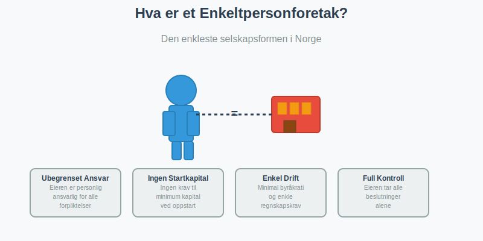
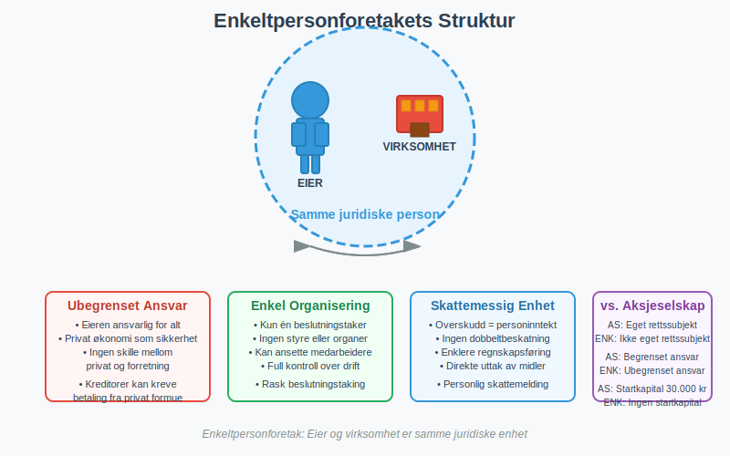
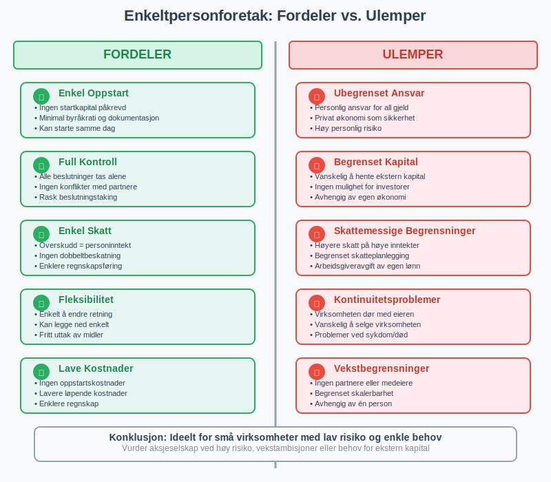
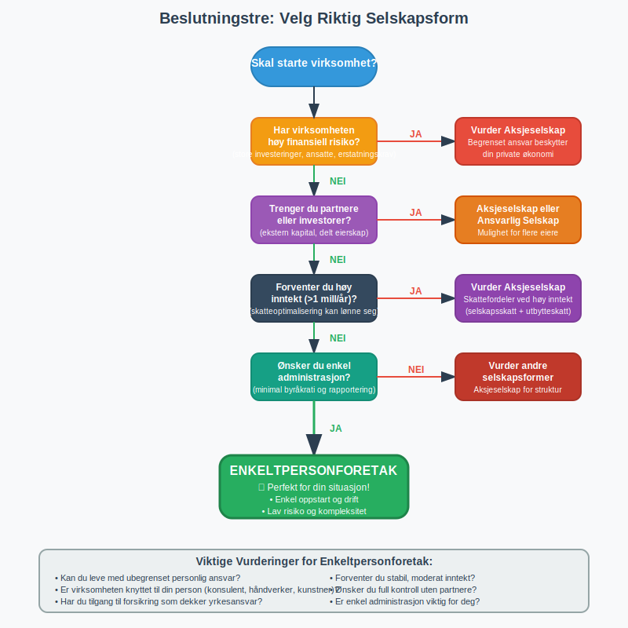

For en oversikt over ulike selskapsformer i Norge, se Selskapsform. For en oversikt over ulike selskapsformer i Norge, se Selskapsform.
For en praktisk guide til oppstart, se Starte Enkeltpersonforetak. Et enkeltpersonforetak (ENK) er den enkleste og mest vanlige foretaksformen for små bedrifter i Norge. Dette er en virksomhet som drives av én person i eget navn, hvor eieren har ubegrenset personlig ansvar for alle forpliktelser.

Hva Kjennetegner et Enkeltpersonforetak?
Et enkeltpersonforetak skiller seg fra andre selskapsformer på flere viktige måter:
Ubegrenset Personlig Ansvar
Den viktigste egenskapen ved et enkeltpersonforetak er at eieren har ubegrenset personlig ansvar. Dette betyr at du som eier er personlig ansvarlig for alle selskapets forpliktelser. Hvis virksomheten får økonomiske problemer, kan kreditorer kreve betaling fra din private økonomi.
Ikke Eget Rettssubjekt
I motsetning til et aksjeselskap, er enkeltpersonforetaket ikke et eget rettssubjekt og ikke en juridisk person. Virksomheten og eieren er juridisk sett samme person, noe som betyr:
- Alle kontrakter inngås i eierens navn
- Eieren eier alle eiendeler direkte
- Eieren er personlig ansvarlig for alle forpliktelser
- Virksomheten kan ikke saksøke eller bli saksøkt separat fra eieren
Ingen Krav til Startkapital
For å starte et enkeltpersonforetak trenger du ingen minimum startkapital. Dette gjør det til den mest tilgjengelige selskapsformen for nye gründere.

Krav for å Starte et Enkeltpersonforetak
Kravene for å etablere et enkeltpersonforetak er minimale:
Registrering
- Frivillig registrering i Enhetsregisteret hvis årlig omsetning er under 50 000 kr
- Obligatorisk registrering hvis årlig omsetning overstiger 50 000 kr
- Registrering gjøres hos Brønnøysundregistrene
- Enkel prosess som kan gjøres digitalt
Eierskap
- Kun én eier - kan ikke ha partnere eller medeiere
- Eieren må være myndig (over 18 år)
- Norske statsborgere eller personer med oppholdstillatelse kan starte enkeltpersonforetak
Navn
- Virksomheten kan drives under eierens eget navn
- Kan også registrere et forretningsnavn (f.eks. “Ola Nordmanns Rørleggerservice”)
- Forretningsnavnet må være unikt og ikke forveksles med andre registrerte navn

Organisering av et Enkeltpersonforetak
Enkeltpersonforetaket har en svært enkel organisasjonsstruktur:
Eieren som Eneste Beslutningstaker
- Eieren tar alle beslutninger alene
- Ingen krav til styre eller andre organer
- Full kontroll over virksomheten
- Kan ansette medarbeidere, men de blir ikke medeiere
Ansatte
- Kan ansette medarbeidere som arbeidstakere
- Ansatte har ingen eierskap eller beslutningsmyndighet
- Eieren er ansvarlig som arbeidsgiver med alle tilhørende plikter
Fordeler med Enkeltpersonforetak
Enkel Oppstart og Drift
- Minimal byråkrati ved oppstart
- Ingen krav til startkapital
- Enkel registreringsprosess
- Lav kostnad ved etablering
Full Kontroll
- Eieren bestemmer alt uten å måtte konsultere andre
- Rask beslutningstaking
- Ingen konflikter med partnere eller aksjonærer
- Fleksibel drift tilpasset eierens ønsker
Enkel Skattebehandling
- Personinntekt - virksomhetens overskudd beskattes som eierens personinntekt
- Ingen dobbeltbeskatning som i aksjeselskaper
- Enklere regnskap og rapportering
- Mulighet for enkelt regnskap hvis omsetningen er under visse grenser
- For landbruksvirksomheter kan jordbruksfradrag gi betydelige skattefordeler
Fleksibilitet
- Enkelt å endre virksomhetens fokus eller retning
- Kan enkelt legge ned virksomheten
- Ingen krav til generalforsamlinger eller styremøter
- Eieren kan ta ut penger fra virksomheten når som helst
Ulemper med Enkeltpersonforetak
Ubegrenset Personlig Ansvar
Den største ulempen er at eierens private økonomi står som sikkerhet for alle virksomhetens forpliktelser:
- Kreditorer kan kreve betaling fra privat formue
- Bolig og andre private eiendeler kan bli tatt som sikkerhet
- Høy personlig risiko ved økonomiske problemer
- Kan påvirke eierens kredittverdighet
Begrenset Tilgang til Kapital
- Vanskelig å hente ekstern kapital siden investorer ikke kan bli medeiere
- Banker kan være mer restriktive med lån
- Ingen mulighet for å utstede aksjer
- Avhengig av eierens private økonomi og kredittevne
Skattemessige Begrensninger
- Høyere skattesats på høye inntekter sammenlignet med aksjeselskap
- Ingen mulighet for utbytteskatt
- Begrenset mulighet for skatteplanlegging
- Eieren må betale arbeidsgiveravgift av egen lønn
Kontinuitetsproblemer
- Virksomheten dør med eieren - ingen automatisk videreføring
- Vanskelig å selge virksomheten som helhet
- Problemer ved eierens sykdom eller død
- Ingen mulighet for gradvis overdragelse til andre

Regnskapsplikt og Rapportering
Enkeltpersonforetak har ulike regnskapskrav avhengig av størrelse:
Omsetning under 5 millioner kr
- Forenklet regnskapsplikt etter bokføringsloven
- Kan føre enkelt regnskap
- Mindre krav til dokumentasjon og rapportering
Omsetning over 5 millioner kr
- Full regnskapsplikt med krav til dobbel bokføring
- Må følge bokføringsforskriften
- Krav til årsregnskap og eventuelt revisjon
MVA-plikt
- MVA-registrering påkrevd hvis omsetningen overstiger 50 000 kr - virksomheten må registreres i MVA-registeret
- Må levere MVA-meldinger regelmessig
- Krav til bilagsføring og dokumentasjon
- Les mer om MVA-plikt for enkeltpersonforetak
Sammenligning med Andre Selskapsformer
For en grundig oversikt over alle organisasjonsformer og hvordan de sammenlignes, se vår detaljerte guide.
| Aspekt | Enkeltpersonforetak | Aksjeselskap (AS) | Ansvarlig Selskap (ANS) |
|---|---|---|---|
| Ansvar | Ubegrenset personlig | Begrenset til aksjekapital | Ubegrenset solidarisk |
| Startkapital | Ingen krav | Minimum 30 000 kr | Ingen krav |
| Antall eiere | Kun én | En eller flere | To eller flere |
| Skattebehandling | Personinntekt | Selskapsskatt + utbytteskatt | Personinntekt for deltakerne |
| Kompleksitet | Svært enkel | Kompleks | Middels kompleks |
| Eget rettssubjekt | Nei | Ja | Nei |
Når Bør Du Velge Enkeltpersonforetak?
Enkeltpersonforetak er ideelt hvis:
Lav Risiko
- Virksomheten har lav finansiell risiko
- Få eller ingen ansatte
- Begrenset med utstyr eller inventar
- Servicenæring uten store investeringer
Enkel Drift
- Ønsker enkel administrasjon og minimal byråkrati
- Ikke behov for eksterne investorer
- Vil ha full kontroll over beslutninger
- Lav omsetning og kompleksitet
Personlig Service
- Virksomheten er knyttet til din person (konsulent, håndverker, kunstner)
- Kunder forventer personlig service fra deg
- Vanskelig å skille mellom deg og virksomheten
Når Bør Du Vurdere Andre Selskapsformer?
Vurder andre alternativer hvis:
Høy Risiko
- Virksomheten innebærer høy finansiell risiko
- Store investeringer i utstyr eller lokaler
- Mange ansatte eller kompleks drift
- Potensielt høye erstatningskrav
Vekstambisjoner
- Planer om rask vekst og behov for ekstern kapital
- Ønsker å ta inn partnere eller investorer
- Behov for å beholde overskudd i virksomheten for reinvestering
Skatteoptimalisering
- Høy inntekt hvor selskapsskatt kan være mer fordelaktig
- Behov for fleksibel uttak av overskudd
- Komplekse eierstrukturer

Praktiske Råd for Oppstart
Hvis du vurderer å starte et enkeltpersonforetak:
Før Oppstart
- Vurder risikoen: Kan du leve med ubegrenset personlig ansvar?
- Planlegg økonomien: Sett opp budsjett og likviditetsplan
- Sjekk forsikringsbehov: Vurder yrkesansvarsforsikring og andre forsikringer
- Velg regnskapssystem: Finn et enkelt system for bokføring
Ved Registrering
- Velg navn: Sjekk at ønsket forretningsnavn er tilgjengelig
- Registrer virksomheten: Bruk Altinn eller Brønnøysundregistrenes nettsider
- Åpne forretningskonto: Skill privat og forretningsøkonomi
- Sett opp regnskap: Etabler rutiner for bilagsføring og dokumentasjon
Etter Oppstart
- Følg opp regnskap: Sørg for løpende bokføring
- Lever rapporter: MVA-meldinger og næringsoppgave til skattemyndighetene
- Vurder vekst: Følg med på om virksomheten vokser ut av enkeltpersonforetak-formen
- Oppdater forsikringer: Juster forsikringsdekning etter behov
Overgang til Andre Selskapsformer
Mange enkeltpersonforetak vokser seg større og må vurdere overgang til andre selskapsformer:
Når Vurdere Overgang
- Omsetning over 5-10 millioner kr - skattefordeler ved aksjeselskap
- Behov for partnere - vurder ansvarlig selskap eller aksjeselskap
- Høy risiko - begrenset ansvar blir viktig
- Investeringsbehov - tilgang til ekstern kapital
Overgangsprosess
- Verdivurdering av virksomheten
- Skattemessige konsekvenser av overgang
- Juridisk bistand for korrekt gjennomføring
- Ny organisering og tilpasning til ny selskapsform
Relaterte Begreper og Konsepter
For å forstå enkeltpersonforetak fullt ut, bør du også sette deg inn i:
- Regnskap - Grunnleggende regnskapsføring for enkeltpersonforetak
- Bokføring - Praktisk bokføring og dokumentasjon
- Bokføringsloven - Juridiske krav til regnskapsføring
- Bilagsføring - Korrekt håndtering av regnskapsbilag
- MVA-plikt - Merverdiavgift for enkeltpersonforetak
- Aksjeselskap - Alternativ selskapsform med begrenset ansvar
- Ansvarlig Selskap - Selskapsform for flere deltakere
Konklusjon
Et enkeltpersonforetak er den perfekte selskapsformen for mange små bedrifter og gründere som ønsker enkel oppstart, full kontroll og minimal administrasjon. Selv om ubegrenset personlig ansvar kan virke skremmende, er dette ofte en overkommelig risiko for virksomheter med lav kompleksitet og begrenset finansiell eksponering.
Nøkkelen til suksess med enkeltpersonforetak ligger i å:
- Forstå risikoen og håndtere den gjennom forsikring og forsiktig drift
- Holde orden på økonomien med god bokføring og regnskap
- Følge opp lovkrav som MVA-rapportering og næringsoppgave
- Vurdere overgang til andre selskapsformer når virksomheten vokser
For mange er enkeltpersonforetaket det naturlige første steget på veien mot å bygge en suksessfull virksomhet.